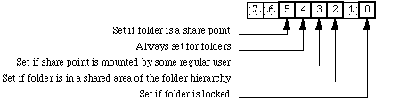
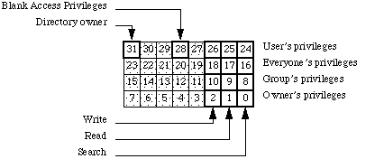

|
|
This Note describes modifications to the existing File Manager routines,PBGetCatInfo, PBHGetDirAccess,
PBHSetDirAccess, PBHSetFLock and PBHRstFLock, when used on volumes prepared by Macintosh System 7 File Sharing.
[Aug 01 1991]
|
Introduction
There are several differences between System 7 File Sharing and AppleShare 2.0.1. This Note describes what those differences
mean when calling PBGetCatInfo, PBHGetDirAccess, PBHSetDirAccess,PBHSetFLock and PBHRstFLock
on local volumes that return bHasPersonalAccessPrivileges to PBHGetVolParms.
Back to top
Share Points, Shared Areas, Locked Folders and PBGetCatInfo
The first notable difference between AppleShare 2.0.1 and File Sharing is that
File Sharing allows both folders and volumes to be exported or shared over an
AppleTalk network (only volumes could be shared with AppleShare 2.0.1). A
folder or volume can be shared by selecting the "Share this item and its
contents" check box in the Finder's Sharing dialog. A folder or volume shared
in this way is called a "share point" and its Finder icon (if it's a folder) is
shown in Figure 1. The share point and all folders under it in the
directory structure have access privileges and those access privileges can be
set by the local user.
Figure 1. Folder that is a Share Point
The server's owner is a user with "All Privileges" and can remotely access all
sharable volumes and folders on the Macintosh no matter what access privileges
are set. The owner of an AppleShare 2.0.1 server is the server administrator.
The owner of a File Sharing server is the owner of the Macintosh system as set
by the Sharing Setup control panel. All other users of a server are considered
regular users. Figure 2 shows the Finder icon of a folder that is a share
point mounted by some regular user.
Figure 2. Folder that is a Share Point Mounted by a Regular User
Folders under a share point are already in a shared area and cannot be share
points. However, those folders have access privileges so the visual feedback
given by the Finder is the icon shown in Figure 3.
Figure 3. Folder in a Shared Area of the Folder Hierarchy
To allow applications to see share points and folders in shared areas, new bit
definitions have been added to the ioFlAttrib bitmap returned by the
File Manager call PBGetCatInfo when the information returned is for a
folder. Bit 4 of ioFlAttrib is always set for folders. If a folder
is a share point, bit 5 of ioFlAttrib is set. If a folder that's a
share point is mounted, bit 3 of ioFlAttrib is set. If a folder is in
a shared area of the folder hierarchy, bit 2 of ioFlAttrib is set. If
a folder is locked, bit 0 of ioFlAttrib is set. Folders can locked or
unlocked with the PBHSetFLock or PBHRstFLock calls. Figure 4
shows the ioFlAttrib bitmap for folders as returned by
PBGetCatInfo under the System 7 File Manager.

Figure 4. ioFlAttrib for a Folder
|
Note:
These bits are READ-ONLY for folders. Do not try to set these
bits with the PBSetCatInfo call.
|
|
Note:
As noted in Inside Macintosh, Volume VI, PBCatSearch
searches only on bits 0 and 4. The additional bits returned in ioFlAttrib by
PBGetCatInfo cannot be used by PBCatSearch.
|
Back to top
Shared Folders and Blank Access Privileges
Another difference between AppleShare 2.0.1 and File Sharing is that File
Sharing supports a new user access privilege called blank access privileges. A
folder with blank access privileges set ignores the other access privilege bits
and uses the access privilege bits of its parent. On the local Macintosh,
folders in a shared area default to blank access privileges (until set
otherwise) and new folders created in a shared area are given blank access
privileges. Folders created over AppleShare are given the same access
privileges as the parent folder (or volume) and are owned by the user that
created them.
Blank access privileges are useful because folders' access privileges now behave in a
way which users expect them to. When a folder with blank access privileges is moved around within
a folder hierarchy, it always reflects the access privileges of its containing folder. However, once the
blank access privileges bit has been cleared for a folder, its access privileges "stick" to that folder,
and remain unchanged no matter where the folder is moved. Volumes that support blank access privileges
have the bHasBlankAccessPrivileges bit set in vMAttrib longword of the volume
parameter data returned by the PBHGetVolParms call. Folders with blank access
privileges can be identified with the PBHGetDirAccess call.
PBHSetDirAccess allows you to setblank access privileges.
When bit 28 of ioACAccess is set, blank access privileges
are set for a folder. The entire access privileges longword with
the new bit for blank access privileges is shown in Figure 5.

Figure 5-Access Privileges in ioACAccess
|
Note:
Only the blank access privileges bit (bit 28) in the high byte of
ioACAccess may be set when calling PBHSetDirAccess. You cannot set the directory owner bit or the user's privileges of a folder.
The blank access privileges bit is not returned in the
ioACUser field by the PBGetCatInfo routine.
|
Back to top
References
Inside Macintosh, Volume IV, The File Manager
Inside Macintosh, Volume V, File Manager Extensions In a Shared Environment
Inside Macintosh, Volume VI, The File Manager
Inside AppleTalk, AppleTalk Filing Protocol
Back to top
Downloadables
|

|
Acrobat version of this Note (136K)
|
Download
|
Back to top
|